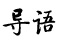
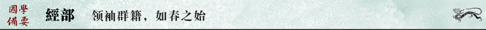
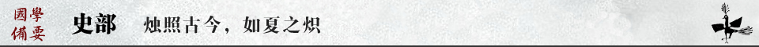
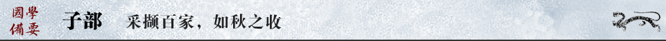

| 经 部 | 史 部 | 子 部 | 集 部 | 蒙 学 |
|
 「國學備要」者，略備國學之精要也。國學之道，其源也遠，其流也長，其積也厚，其淵也深。在如煙海的中國古籍中共同推選出的280種國學經典，收錄有十三經、二十六史、《資治通鑒》，以及重要的別史、雜史、野史，儒、釋、道等諸子百家經典，筆記、類書、小說，歷代詩文總集、作家選集及戲曲、文論等，上起先秦，下迄清末，經史子集，一覽無余，可稱國學入門必備要目。 |

| 分類 | 序號 | 書名 | 作者 | 解題 | 閲讀 |
| 十三經 | 001 | 周易 | 領袖群經，神龍見首 | 周易，正義 | |
| 002 | 尚書 | 堯舜禹湯，昭如日月 | 尚書，正義 | ||
| 003 | 詩經 | 所謂天籟，在此一方 | 詩經，正義 | ||
| 004 | 周禮 | 天地四時，百官居位 | 周禮，註疏 | ||
| 005 | 儀禮 | 尊卑有序，親疏有別 | 儀禮，註疏 | ||
| 006 | 禮記 | 六藝之教，中庸之道 | 禮記，正義 | ||
| 007 | 春秋左傳 | 跌宕不群，縱橫自得 | 左傳，註疏 | ||
| 008 | 春秋公羊傳 | 三科九旨，一統大同 | 公羊傳，註疏 | ||
| 009 | 春秋穀梁傳 | 崇禮尚德，尊王攘夷 | 穀梁傳，註疏 | ||
| 010 | 孝經 | 百善之首，立國之基 | 孝經，註疏 | ||
| 011 | 爾雅 | 聚類釋名，經緯百科 | 爾雅，註疏 | ||
| 012 | 論語 | 半部治天下，布衣成聖賢 | 論語，註疏，正義 | ||
| 013 | 孟子 | 民貴君輕，王道蕩蕩 | 孟子，註疏 | ||
| 經學史 | 014 | 韓詩外傳 | 西漢·韓嬰 | 詩在言外，意在詩外 | 韓詩外傳 |
| 015 | 尚書大傳 | 西漢·伏生 | 劫後餘生，似偽似真 | ||
| 016 | 春秋繁露 | 西漢·董仲舒 | 天人感應，儒術獨尊 | ||
| 017 | 大戴禮記 | 西漢·戴德 | 禮外別傳，今文嫡派 | ||
| 018 | 白虎通義 | 東漢·班固 | 古今論戰，繼往開來 | ||
| 019 | 四書章句集註 | 宋·朱熹 | 一朝編定，千載不移 | 四書章句集註 | |
| 020 | 經學歷史 | 清·皮錫瑞 | 六經致用，孔教救國 |

| 分類 | 序號 | 書名 | 作者 | 解題 | 閲讀 |
| 正史 | 021 | 史記 | 西漢·司馬遷 | 通古今之變，成一家之言 | 史記 |
| 022 | 漢書 | 東漢·班固 | 斷代為限，一朝國史 | 漢書 | |
| 023 | 後漢書 | 南朝宋·範曄 | 簡而見周，疏而不漏 | 後漢書 | |
| 024 | 三國誌 | 晉·陳壽 | 三國鼎立，分久必合 | 三國誌 | |
| 025 | 晉書 | 唐·房玄齡等 | 三分一統，五胡亂華 | 晉書 | |
| 026 | 宋書 | 南朝梁·沈約 | 奪鼎代晉，氣吞江左 | 宋書 | |
| 027 | 南齊書 | 南朝梁·蕭子顯 | 佛昌文興，寄幸永明 | 南齊書 | |
| 028 | 梁書 | 唐·姚思廉 | 一朝亂起，繁華盡落 | 梁書 | |
| 029 | 陳書 | 唐·姚思廉 | 六朝餘暉，轉瞬成空 | 陳書 | |
| 030 | 魏書 | 北齊·魏收 | 黃河一統，胡漢合流 | 魏書 | |
| 031 | 北齊書 | 唐·李百藥 | 廿載六帝，墻內相鬩 | 北齊書 | |
| 032 | 周書 | 唐·令狐德棻等 | 以弱勝強，拓土開疆 | 周書 | |
| 033 | 隋書 | 唐·魏徵等 | 興也勃焉，亡也忽焉 | 隋書 | |
| 034 | 南史 | 唐·李延壽 | 杏花春雨江南 | 南史 | |
| 035 | 北史 | 唐·李延壽 | 駿馬秋風塞北 | 北史 | |
| 036 | 舊唐書 | 後晉·劉昫等 | 誌與表，不如新 | 舊唐書 | |
| 037 | 新唐書 | 宋·歐陽修、宋祁等 | 紀與傳，不如舊 | 新唐書 | |
| 038 | 舊五代史 | 宋·薛居正等 | 五代分敘，十國合述 | 舊五代史 | |
| 039 | 新五代史 | 宋·歐陽修 | 五代合敘，十國分述 | 新五代史 | |
| 040 | 宋史 | 元·脫脫等 | 文盛武衰，衣冠南渡 | 宋史 | |
| 041 | 遼史 | 元·脫脫等 | 南越長城，北絕大漠 | 遼史 | |
| 042 | 金史 | 元·脫脫等 | 金生黑水，淚殤黃河 | 金史 | |
| 043 | 元史 | 明·宋濂等 | 大哉乾元，橫掃天下 | 元史 | |
| 044 | 明史 | 清·張廷玉等 | 一波三折，百年乃成 | 明史 | |
| 045 | 新元史 | 柯劭忞 | 一人之力，千鈞之功 | 新元史 | |
| 046 | 清史稿 | 趙爾巽等 | 草書之筆，急就之章 | 清史稿 | |
| 別雜史 | 047 | 逸周書 | 戰國 | 收之聖人，失之聖人 | 逸周書 |
| 048 | 國語 | 戰國 | 風雲一代，春秋八國 | 國語 | |
| 049 | 戰國策 | 西漢·劉向集錄 | 縱橫四方，睥睨天地 | 戰國策 | |
| 050 | 列女傳 | 漢·劉向 | 女子無才便是德 | ||
| 051 | 吳越春秋 | 東漢·趙曄 | 不類信史，反類小說 | ||
| 052 | 越絕書 | 東漢·袁康 | 吳言越語，君問臣答 | ||
| 053 | 人物誌 | 三國魏·劉邵 | 知人善任，書中伯樂 | ||
| 054 | 華陽國誌 | 晉·常璩 | 巴蜀春秋，美不勝收 | ||
| 055 | 山海經 | 戰國·佚名 | 山中奇譚，海外奇觀 | ||
| 056 | 水經註 | 後魏·酈道元註 | 別開生面，妙不可言 | ||
| 057 | 洛陽伽藍記 | 後魏·楊衒之 | 梵樂已遠，佛香猶聞 | ||
| 058 | 大唐西域記 | 唐·玄奘 | 遐方異俗，絕壤殊風 | ||
| 059 | 大業拾遺記 | 唐·顏師古 | 隋煬一世，煙花一現 | ||
| 060 | 貞觀政要 | 唐·吳兢 | 君賢臣忠，長治久安 | ||
| 061 | 資治通鑒 | 宋·司馬光 | 鑒於往事，資於治道 | 資治通鑒 | |
| 062 | 續資治通鑒 | 清·畢沅編著 | 宋元易鼎，蒙漢交鋒 | 續通鑒，續通鑒長編 | |
| 063 | 五代史補 | 宋·陶嶽 | 道聽途說，亦足補史 | ||
| 064 | 通誌略 | 宋·鄭樵 | 總天下之學術，紀百代之憲章 | ||
| 065 | 吳地記 | 唐·陸廣微 | 大唐江南，全景蘇州 | ||
| 066 | 唐六典 | 唐·李林甫等 | 建官之製，為政之方 | ||
| 067 | 通典 | 唐·杜佑 | 典章製度之通史，經國治世之良模 | ||
| 068 | 史通 | 唐·劉知幾 | 為史者宜置於座右 | ||
| 069 | 桯史 | 宋·嶽珂 | 說朝說野，公是公非 | ||
| 070 | 文史通義 | 清·章學誠 | 六經皆史，學兼性情 | ||
| 071 | 讀通鑒論 | 清·王夫之 | 讀古人之書，揣今世之爭 | ||
| 072 | 廿二史劄記 | 清·趙翼 | 考正史之得失，究歷代之興廢 | ||
| 野史 | 073 | 穆天子傳 | 戰國·佚名 | 思接千裏，神馳八極 | |
| 074 | 晉五胡指掌 | 明·張大齡 | 興廢始末，煥焉在目 | ||
| 075 | 唐摭言 | 五代·王定保 | 登科落榜，得意失意 | ||
| 076 | 開元天寶遺事 | 五代·王仁裕 | 閑話宮中事，有裨後世聞 | ||
| 077 | 洛陽縉紳舊聞記 | 宋·張齊賢 | 末世衰民，舊都遺老 | ||
| 078 | 大宋宣和遺事 | 宋·佚名 | 內憂外患，兩宋交迫 | ||
| 079 | 靖康傳信錄 | 宋·李綱 | 開封之戰，靖康之恥 | ||
| 080 | 蒙韃備錄 | 宋·孟珙 | 草原之鷹，天驕之國 | ||
| 081 | 聖武親征錄校註 | 王國維校註 | 彎弓大漠，立馬中原 | ||
| 082 | 元朝秘史 | 元·佚名 | 黃金家族黃金冊 | ||
| 083 | 備倭記 | 明·蔔大同輯 | 空言空語，紙上談兵 | ||
| 084 | 萬歷野獲編 | 明·沈德符 | 雖雲野獲，堪比正史 | ||
| 085 | 南明野史 | 清·三餘氏 | 江山已逝，茍延殘喘 | ||
| 086 | 郎潛紀聞 | 清·陳康祺 | 清史遺珠，四筆探驪 | ||
| 目錄 | 087 | 崇文總目 | 宋·王堯臣等編 | 秘閣藏書，官修名冊 | |
| 088 | 郡齋讀書誌 | 宋·晁公武 | 校讎之餘，提要之祖 | ||
| 089 | 書林清話 | 清·葉德輝 | 百科書史，源遠流長 | ||
| 090 | 校讎通義 | 清·章學誠 | 辨章學術，考鏡源流 | ||
| 091 | 書目答問 | 清·張之洞 | 讀書指南，治學門徑 | ||
| 092 | 四庫全書總目提要 | 清·紀昀等 | 經史子集，綱舉目張 |

| 分類 | 序號 | 書名 | 作者 | 解題 | 閲讀 |
| 諸子 | 093 | 老子 | 春秋·李耳 | 道不可道，玄之又玄 | 老子 |
| 094 | 莊子 | 戰國·莊周 | 神與物遊，逍遙塵外 | 南華經 | |
| 095 | 墨子 | 戰國·墨翟 | 兼愛其仁，非攻其義 | ||
| 096 | 公孫龍子 | 戰國·公孫龍 | 白馬非馬，名不符實 | ||
| 097 | 列子 | 戰國·列禦寇 | 入乎其內，出乎其外 | ||
| 098 | 荀子 | 戰國·荀況 | 尊王稱霸，崇禮講法 | ||
| 099 | 孫子 | 春秋·孫武 | 知己知彼，百戰不殆 | ||
| 100 | 文子 | 春秋·辛钘 | 雜糅百家，道為其旨 | ||
| 101 | 關尹子 | 春秋·尹喜 | 九陽至極，大道其成 | ||
| 102 | 鹖冠子 | 戰國·鹖冠子 | 深淺莫測，真偽難辨 | ||
| 103 | 晏子春秋 | 戰國·晏嬰 | 傳記鼻祖，小說濫觴 | ||
| 104 | 呂氏春秋 | 戰國·呂不韋 | 市門懸賞，一字千金 | ||
| 105 | 管子 | 春秋·管仲 | 九合諸侯，一匡天下 | ||
| 106 | 韓非子 | 戰國·韓非 | 人非有愛，法本無情 | 韓非子 | |
| 107 | 商君書 | 戰國·商鞅 | 任法明術，強兵弱民 | ||
| 108 | 慎子 | 戰國·慎到 | 天道因循，貴勢尚法 | ||
| 109 | 尹文子 | 戰國·尹文 | 名有三科，法有四程 | ||
| 110 | 鄧析子 | 春秋·鄧析 | 操兩可之說，設無窮之辭 | ||
| 111 | 孔叢子 | 秦·孔鮒 | 聖人之言，後世之教 | ||
| 112 | 淮南子 | 西漢·劉安 | 薈萃諸子，旁搜異聞 | ||
| 113 | 新書 | 西漢·賈誼 | 傷逝賈子，絕代鴻文 | ||
| 114 | 太玄經 | 西漢·揚雄 | 玄生萬物，九九歸一 | ||
| 115 | 鹽鐵論 | 西漢·桓寬 | 朝野對話，官民爭勝 | ||
| 116 | 論衡 | 東漢·王充 | 疾虛妄，斥鬼神 | ||
| 117 | 風俗通義 | 東漢·應劭 | 辯風正俗，觀微察隱 | ||
| 118 | 申鑒 | 東漢·荀悅 | 政之大經，法教而已 | ||
| 119 | 新論 | 東漢·桓譚 | 生死相待，形神相依 | ||
| 120 | 顏氏家訓 | 北齊·顏之推 | 古今家訓，以此為祖 | ||
| 121 | 劉子 | 北齊·劉晝 | 禮教為先，無為是務 | ||
| 122 | 金樓子 | 南朝梁·蕭繹 | 常笑淮南之假手，每嗤不韋之托人 | ||
| 儒家 | 123 | 新語 | 西漢·陸賈 | 秦所以亡，漢所以興 | |
| 124 | 說苑 | 西漢·劉向 | 分門別類，稽古談史 | ||
| 125 | 新序 | 西漢·劉向 | 嘉言懿行，可嘆可敬 | ||
| 126 | 揚子法言 | 西漢·揚雄 | 儒學正統，孔聖獨尊 | ||
| 127 | 孔子家語 | 西漢·佚名 | 孔氏家學，源遠流長 | ||
| 128 | 忠經 | 東漢·馬融 | 天下至德，莫大乎忠 | ||
| 129 | 朱子語類 | 宋·朱熹 | 師徒問答，教學相長 | ||
| 130 | 近思錄 | 宋·朱熹、呂祖謙 | 身邊之事，日常之理 | ||
| 131 | 傳習錄 | 明·王陽明 | 心外無學，傳而習之 | ||
| 132 | 一貫問答 | 明·方以智 | 一以貫多，不妨矛盾 | ||
| 釋家 | 133 | 金剛經 | 後秦·鳩摩羅什譯 | 萬事皆空，當如是觀 | |
| 134 | 楞嚴經 | 唐·般剌密帝譯 | 眾心本凈，修禪自明 | ||
| 135 | 無量壽經 | 三國魏·康僧鎧譯 | 修德無量，往生極樂 | ||
| 136 | 肇論 | 東晉·僧肇 | 有即是無，無即是有 | ||
| 137 | 法苑珠林 | 唐·釋道世 | 華枝春滿，天心月圓 | ||
| 138 | 六祖壇經 | 唐·慧能 | 本來無一物，何處惹塵埃 | ||
| 139 | 童蒙止觀 | 隋·智顗 | 止以收心，觀以啟悟 | ||
| 140 | 弘明集 | 南朝梁·僧祐編 | 道以人弘，教以文明 | ||
| 141 | 祖堂集 | 五代·靜、筠禪僧 | 中土失傳，海外遺蹤 | ||
| 142 | 五燈會元 | 宋·普濟 | 佛法如燈，代代相傳 | ||
| 道家 | 143 | 抱樸子 | 晉·葛洪 | 求仙煉丹，談玄論道 | |
| 144 | 無能子 | 唐·無能子 | 天地無心，萬物同歸 | ||
| 145 | 化書 | 五代·譚峭 | 化之為道，流轉無窮 | ||
| 146 | 太平經 | 東漢 | 木蘭樹下，神人問答 | ||
| 147 | 雲笈七簽 | 宋·張君房 | 攝道藏之英，略諸子之奧 | ||
| 148 | 周易參同契 | 東漢·魏伯陽 | 內外兼修，天人合一 | ||
| 149 | 老子想爾註 | 東漢 | 道為至尊，積善成功 | ||
| 150 | 太上感應篇 | 宋·佚名 | 禍福無門，惟人自召 | ||
| 151 | 海內十洲三島記 | 西漢·東方朔 | 海上有仙山，虛無縹緲間 | ||
| 152 | 真誥 | 南朝梁·陶弘景 | 眾真降授，三君手書 | ||
| 雜家 | 153 | 吳子 | 戰國·吳起 | 內修文德，外治武備 | |
| 154 | 鬼谷子 | 春秋·王詡 | 潛謀於無形，常勝於不爭 | ||
| 155 | 六韜 | 舊題周·姜尚 | 文韜武略，兵書之祖 | ||
| 156 | 三略 | 舊題漢·黃石公 | 攬英雄之心，立不敗之地 | ||
| 157 | 素書 | 西漢·張良 | 運籌帷幄，決勝千裏 | ||
| 158 | 長短經 | 唐·趙蕤 | 長謀短術，王霸雄圖 | 長短經 | |
| 159 | 忍經 | 元·吳亮撰 | 一忍成仁，百忍成聖 | ||
| 160 | 黃帝內經素問 | 舊題黃帝 | 黃帝問醫，岐伯釋疑 | ||
| 161 | 神農本草經 | 清·孫星衍等輯 | 醫科聖典，藥學大全 | ||
| 162 | 古畫品錄 | 南朝齊·謝赫 | 畫宗六法，氣韻為上 | ||
| 163 | 歷代名畫記 | 唐·張彥遠 | 畫史之祖，遺澤千秋 | ||
| 164 | 法書要錄 | 唐·張彥遠 | 意在筆先，法成書後 | ||
| 165 | 海嶽名言 | 宋·米芾 | 別尋蹊徑，獨闡精微 | ||
| 166 | 林泉高致 | 宋·郭熙 | 近水遙山皆磊落 | ||
| 167 | 棋經十三篇 | 宋·張擬 | 成敗縱橫界，生死黑白間 | ||
| 168 | 樂府雜錄 | 唐·段安節 | 大唐之音，歌舞升平 | ||
| 169 | 茶經 | 唐·陸羽 | 臨溪烹茗，緩緩醉矣 | ||
| 170 | 洛陽牡丹記 | 宋·歐陽修 | 名花美文兩傾國 | ||
| 171 | 北山酒經 | 宋·朱肱 | 壺裏乾坤大，杯中日月長 | ||
| 172 | 隨園食單 | 清·袁枚 | 烹天下美食，品人間至味 | ||
| 173 | 九章算術 | 西漢·張蒼 | 一問一答，百題百解 | ||
| 174 | 氾勝之書 | 西漢·氾勝之 | 農耕之本，趨時得法 | ||
| 175 | 夢溪筆談 | 宋·沈括 | 走筆天下，縱談百科 | ||
| 176 | 營造法式 | 宋·李誡 | 指劃方圓，丈量天地 | ||
| 177 | 天工開物 | 明·宋應星 | 天工巧奪，開物成務 | ||
| 筆記 | 178 | 世說新語 | 南朝宋·劉義慶 | 魏晉風流，盡收眼底 | |
| 179 | 大唐新語 | 唐·劉肅 | 事關政教，言涉文詞 | ||
| 180 | 幽閑鼓吹 | 唐·張固 | 偶記君臣事，盡話朝野聞 | ||
| 181 | 中華古今註 | 五代·馬縞 | 考辨名物，註釋古今 | ||
| 182 | 北夢瑣言 | 宋·孫光憲 | 孤唐五代，亂世碎影 | ||
| 183 | 唐語林 | 宋·王讜 | 唐人世說，風俗可辨 | ||
| 184 | 容齋隨筆 | 宋·洪邁 | 筆記之珍，南宋之冠 | ||
| 185 | 老學庵筆記 | 宋·陸遊 | 放翁雖老，其學彌高 | ||
| 186 | 鶴林玉露 | 宋·羅大經 | 博而匪濫，醇而寡疵 | ||
| 187 | 東京夢華錄 | 宋·孟元老 | 千古繁華一夢中 | 東京夢華錄 | |
| 188 | 湘山野錄 | 宋·文瑩 | 佛家閑筆，野外別傳 | ||
| 189 | 夢粱錄 | 宋·吳自牧 | 東南形勝，三吳都會 | ||
| 190 | 鐵圍山叢談 | 宋·蔡絳 | 邊城夢回，流人囈語 | ||
| 191 | 澠水燕談錄 | 宋·王辟之 | 宦海退居，士林清議 | ||
| 192 | 唐才子傳 | 元·辛文房 | 詩才濟濟，詩風泱泱 | ||
| 193 | 南村輟耕錄 | 元·陶宗儀 | 耕餘信筆，積葉成書 | ||
| 194 | 西南夷風土記 | 明·朱孟震 | 光照西土，風越南疆 | ||
| 195 | 古今風謠 | 明·楊慎 | 古今多少事，且聽風中謠 | ||
| 196 | 陶庵夢憶 | 明·張岱 | 前塵已逝，往事堪嗟 | ||
| 197 | 舊典備征 | 清·朱彭壽 | 大清國故，殫見洽聞 | ||
| 198 | 陔餘叢考 | 清·趙翼 | 讀書偶得，治學深究 | ||
| 199 | 廣東新語 | 清·屈大均 | 粵風嶺俗，身經目睹 | ||
| 200 | 日知錄 | 清·顧炎武 | 生平誌業，皆在其中 | ||
| 類書 | 201 | 藝文類聚 | 唐·歐陽詢 | 隨類從事，因事輯文 | |
| 202 | 初學記 | 唐·徐堅 | 非止初學，可為終身 | ||
| 203 | 太平禦覽 | 宋·李昉等 | 天地人物，包羅萬有 | 太平禦覽 | |
| 204 | 太平廣記 | 宋·李昉 | 故事淵藪，小說大成 | 太平廣記 | |
| 205 | 七修類稿 | 明·郎瑛 | 考辯史餘，論載典外 | ||
| 小說 | 206 | 搜神記 | 東晉·幹寶 | 誰道天下無神，且看人間有鬼 | 搜神記 |
| 207 | 遊仙窟 | 唐·張鷟 | 誤入神仙地，迷墮溫柔鄉 | ||
| 208 | 聊齋誌異 | 清·蒲松齡 | 說鬼談狐，入世三分 | 聊齋誌異 | |
| 209 | 斷鴻零雁記 | 清·蘇曼殊 | 行雲流水，孤僧情悟 | ||
| 210 | 西遊記 | 明·吳承恩 | 求心證性，歷難成佛 | 西遊記 | |
| 211 | 水滸傳 | 明·施耐庵、羅貫中 | 官逼民反，替天行道 | 水滸傳 | |
| 212 | 三國演義 | 明·羅貫中 | 青梅煮酒，誰是英雄 | 三國演義 | |
| 213 | 金瓶梅 | 明·笑笑生 | 酒色財氣，四大皆空 | 金瓶梅 | |
| 214 | 喻世明言 | 明·馮夢龍輯 | 世事多諷，喻以導愚 | 喻世明言 | |
| 215 | 警世通言 | 明·馮夢龍輯 | 世情多舛，警以勸俗 | 警世通言 | |
| 216 | 醒世恒言 | 明·馮夢龍輯 | 世人多醉，醒以戒心 | 醒世恒言 | |
| 217 | 初刻拍案驚奇 | 明·淩濛初 | 重翻舊曲，再釀新蒸 | 初刻拍案驚奇 | |
| 218 | 二刻拍案驚奇 | 明·淩濛初 | 世風日下，近事堪憂 | 二刻拍案驚奇 | |
| 219 | 型世言 | 明·陸人龍 | 末世頹風，樹型正俗 | ||
| 220 | 清平山堂話本 | 明·洪楩 | 口傳心授，話皆有本 | ||
| 221 | 封神演義 | 明·許仲琳 | 成王敗寇，周革殷命 | 封神演義 | |
| 222 | 東周列國誌 | 明·馮夢龍、蔡元放 | 春秋爭霸，戰國稱雄 | 東周列國誌 | |
| 223 | 紅樓夢 | 清·曹雪芹、高鶚 | 十年辛苦，字字血淚 | 紅樓夢 | |
| 224 | 儒林外史 | 清·吳敬梓 | 魃魅魍魎，毫發畢現 | 儒林外史 | |
| 225 | 醒世姻緣傳 | 清·西周生 | 冤仇相報，兩世姻緣 | ||
| 226 | 鏡花緣 | 清·李汝珍 | 海外尋仙不辭遠，月華空駐水空流 | ||
| 227 | 七俠五義 | 清·石玉昆 | 除暴安良，快意恩仇 | ||
| 228 | 老殘遊記 | 清·劉鶚 | 棋局已殘，吾國已老 | 老殘遊記 | |
| 229 | 俠義風月傳 | 清·名教中人 | 窈窕淑女，俠士好逑 | ||
| 230 | 孽海花 | 清·曾樸 | 孽海浮沈，早登覺岸 | 孽海花 |
| 分類 | 序號 | 書名 | 作者 | 解題 | 閲讀 |
| 總集 | 231 | 文選 | 唐·李善註 | 文選爛，秀才半 | |
| 232 | 六朝文絜 | 清·許梿 | 風月無邊，黯然銷魂 | ||
| 233 | 駢體文鈔 | 清·李兆洛 | 儷句偶語，敲金戛玉 | ||
| 234 | 古文觀止 | 清·吳楚材、吳調侯 | 天下至文，入吾轂中 | ||
| 235 | 楚辭章句 | 漢·王逸註 | 屈子情懷，楚騷淵藪 | ||
| 236 | 玉臺新詠 | 南朝陳·徐陵 | 艷歌多寂寞，離恨不堪聞 | ||
| 237 | 樂府詩集 | 宋·郭茂倩編 | 千年樂府，一編盡覽 | ||
| 238 | 全唐詩 | 清·彭定求等編 | 詩家勝境，氣象萬千 | ||
| 239 | 敦煌變文 | 佛家俗講，石窟遺稿 | |||
| 240 | 宋詩鈔 | 清·吳之振等 | 獨辟蹊徑，別尋理趣 | ||
| 241 | 元詩別裁集 | 清·張景星等編 | 宗唐承宋，風味自成 | ||
| 242 | 明詩別裁集 | 清·沈德潛編 | 詩教溫柔，人倫敦厚 | ||
| 243 | 清詩別裁集 | 清·沈德潛編 | 絕去浮靡，獨崇詩教 | ||
| 244 | 全唐五代詞 | 詞體初起，清新自然 | |||
| 245 | 全宋詞 | 詞壇盛景，一代風華 | |||
| 246 | 近三百年名家詞選 | 龍榆生選編 | 詞苑暮色，夕陽無限 | ||
| 247 | 掛枝兒 | 明·馮夢龍 | 語笑天然，活色生香 | ||
| 248 | 晚清文選 | 鄭振鐸 | 世上風雲，筆底波瀾 | ||
| 別集 | 249 | 曹子建集 | 三國魏·曹植 | 貴胄清華，超然高蹈 | |
| 250 | 陶淵明集 | 晉·陶潛 | 外枯中膏，似淡實美 | ||
| 251 | 韓愈集 | 唐·韓愈 | 才雄百代，文動八表 | ||
| 252 | 柳宗元集 | 唐·柳宗元 | 文道合一，不平則鳴 | ||
| 253 | 歐陽修集 | 宋·歐陽修 | 天地自在，山水從容 | ||
| 254 | 蘇軾集 | 宋·蘇軾 | 大江東去，千古風流 | ||
| 255 | 張載集 | 宋·張載 | 天地立心，萬世太平 | ||
| 256 | 元好問集 | 金·元好問 | 一語天然萬古新，豪華落盡見真淳 | ||
| 257 | 王陽明集 | 明·王守仁 | 心外無物，知行合一 | ||
| 258 | 人境廬詩草 | 清·黃遵憲 | 我手寫吾口，古豈能拘牽 | ||
| 戲曲 | 259 | 西廂記 | 元·王實甫 | 一見鐘情，終成眷屬 | |
| 260 | 竇娥冤 | 元·關漢卿 | 梨園領袖，感天動地 | ||
| 261 | 琵琶記 | 元·高明 | 琵琶弦斷，誰人堪聽 | ||
| 262 | 牡丹亭 | 明·湯顯祖 | 相尋夢裏路，飛雨落花中 | ||
| 263 | 嬌紅記 | 明·孟稱舜 | 生死相隨，不離不棄 | ||
| 264 | 桃花扇 | 清·孔尚任 | 借離合情，寫興亡感 | ||
| 265 | 長生殿 | 清·洪升 | 碧落黃泉，兩情不渝 | ||
| 文論 | 266 | 文心雕龍 | 南朝梁·劉勰 | 體大思精，籠罩群言 | |
| 267 | 文筆要訣 | 唐·杜正倫 | 虛字助詞，句首何用 | ||
| 268 | 詩品 | 南朝梁·鍾嶸 | 以品論人，詩話先聲 | ||
| 269 | 二十四詩品 | 唐·司空圖 | 詩中有品，品中有詩 | ||
| 270 | 文鏡秘府論 | 日／遍照金剛 | 六合四聲，詩格大成 | ||
| 271 | 本事詩 | 唐·孟棨 | 依詩系事，以明厥義 | ||
| 272 | 樂府古題要解 | 唐·吳兢 | 追本溯源，望題思義 | ||
| 273 | 六一詩話 | 宋·歐陽修 | 詩話先河，醉翁絕筆 | ||
| 274 | 甌北詩話 | 清·趙翼 | 五代十家，詩壇獨步 | ||
| 275 | 詞源 | 宋·張炎 | 窮樂律之本源，奉雅詞為依歸 | ||
| 276 | 本事詞 | 清·葉申薌 | 詞緣於事，情動於中 | ||
| 277 | 白雨齋詞話 | 清·陳廷焯 | 別具慧眼，抉擇幽微 | ||
| 278 | 人間詞話 | 王國維 | 人間閱盡，境界天開 | ||
| 279 | 閑情偶寄 | 明·李漁 | 信手拈來，皆成妙旨 | ||
| 280 | 宋元戲曲史 | 王國維 | 曲學祧祖，風氣首開 |